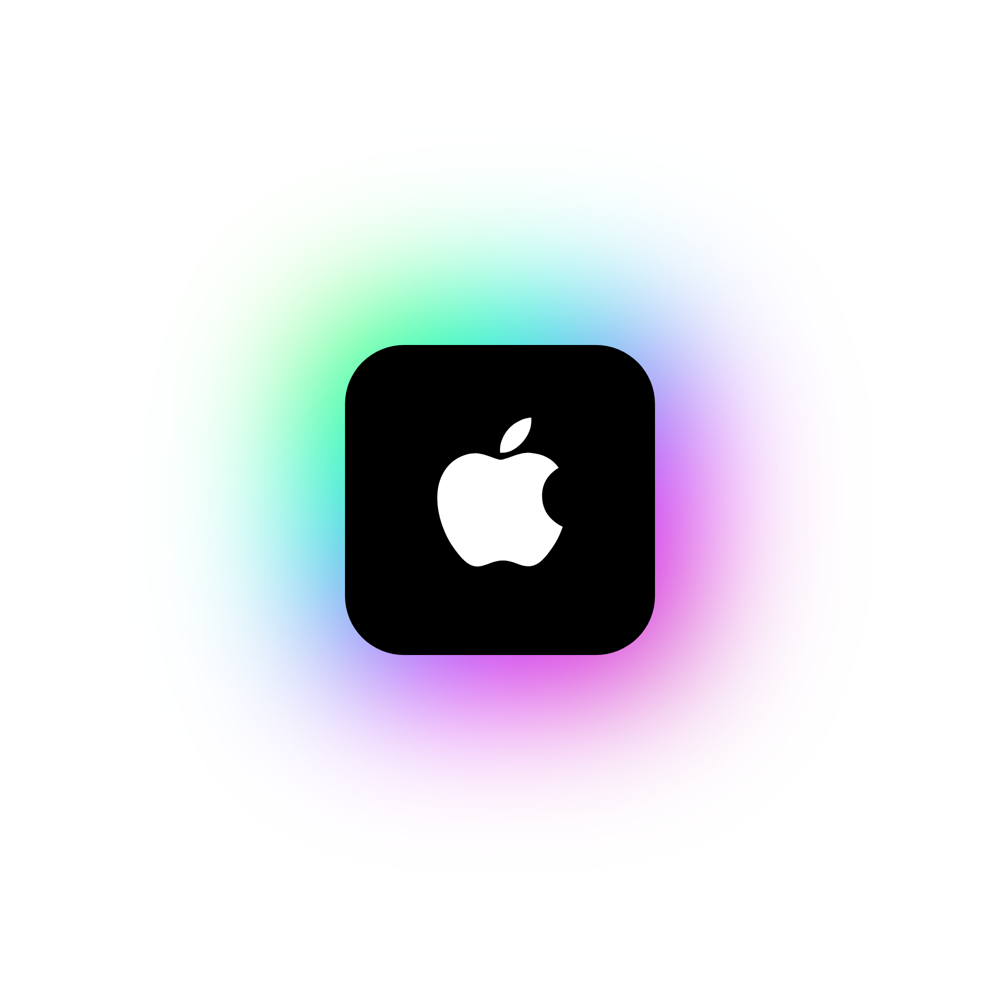

L'aventure commence bientôt
Cliquez sur l'option de votre choix.
Tout ce dont vous avez besoin pour nous rejoindre.
Installation Manuelle
Si vous rencontrez des difficultés avec le Launcher ou que vous souhaitez simplement installer le ModPack manuellement, veuillez suivre ce tutoriel
(ce choix n'est pas recommandé pour les utilisateurs peu expérimentés)
Installation Linux
Nous travaillons toujours sur les versions Linux
Installation macOS
Compatible avec les Mac équipés de puces Apple Silicon (M1,M2,M3,M4, etc..) et Intel
